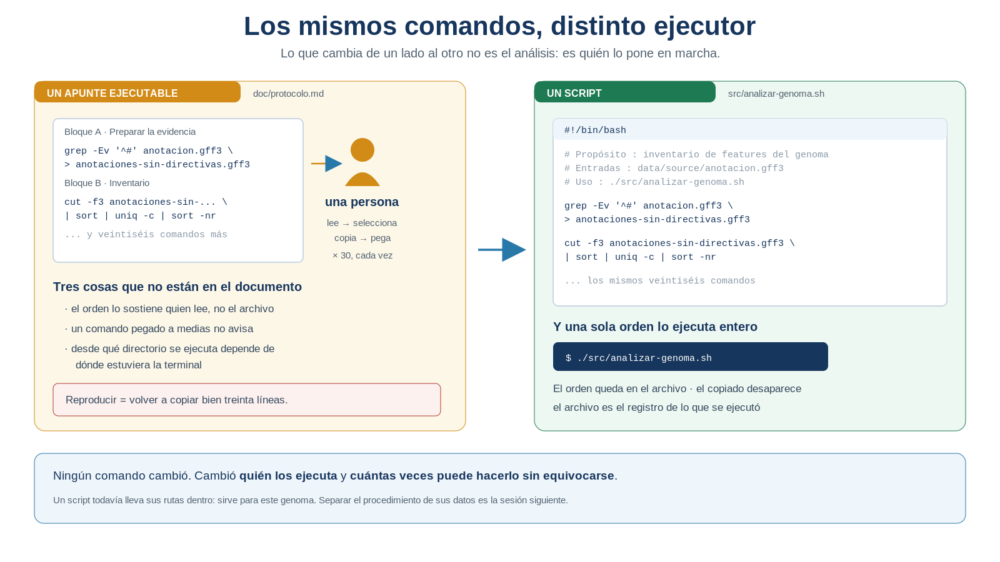
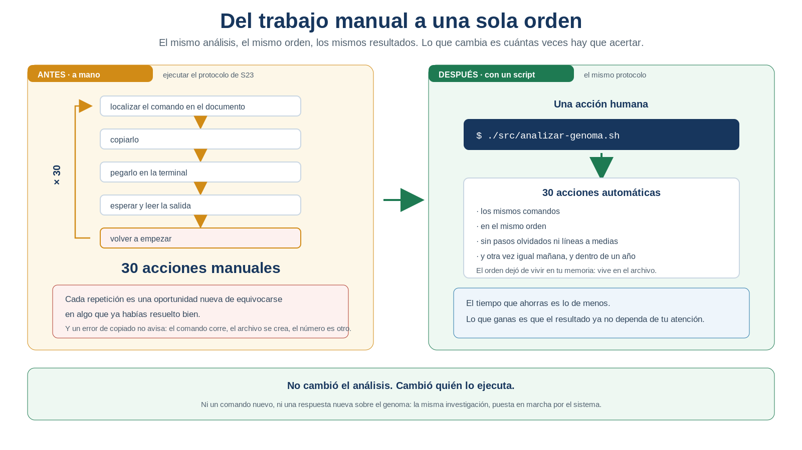
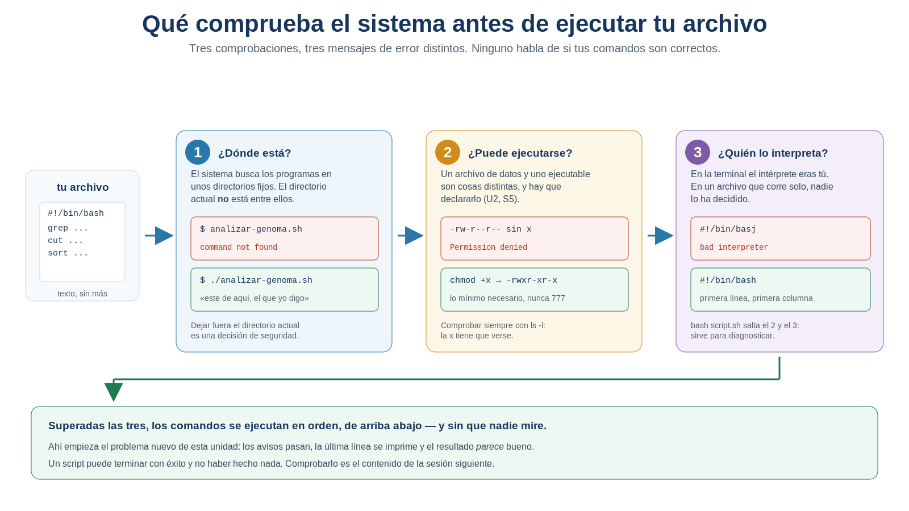

S24 — Guardar: del protocolo ejecutable al script
Antes de clase harás un primer intento sin ejecutar nada: elegir qué fragmento de tu protocolo de S23 merece convertirse en el primer script, y predecir por escrito qué ocurrirá cuando el sistema intente ejecutarlo. Durante el taller construirás ese script, lo ejecutarás y provocarás a propósito los tres fracasos que todo el mundo comete la primera vez. Después ampliarás el script a la ruta crítica completa y comprobarás que produce exactamente lo mismo que produjiste a mano.
El primer intento es formativo: importa que hagas predicciones, no que acierten.
Ficha del módulo
| Elemento | Descripción |
|---|---|
| Sesión | S24, 2 horas |
| Unidad | U5. Automatización de análisis bioinformáticos con Shell — sesión de apertura |
| Competencia principal | E. Automatización y scripting |
| Competencias integradas | A. Documentación reproducible; B. Entorno Unix; D. Análisis de datos genómicos |
| Propósito | Convertir un procedimiento que una persona ejecuta a mano en un archivo que el sistema ejecuta de principio a fin, sin perder el orden ni las verificaciones |
| Consulta previa del Plan | S23 y el protocolo ejecutable de la Unidad 4; este módulo es la lectura autocontenida de la sesión |
| Continuidad | S23 dejó un protocolo ejecutable cuya ejecución depende de una persona; S24 se la quita de encima |
| Lectura indispensable | Secciones 1–6 de este módulo (~50 min) |
| Lectura base de la unidad | Buffalo (2015), Cap. 12, secciones iniciales sobre shell scripting (~40 min; la evidencia se entrega en S26) |
| Lectura de consulta | Sección 7; tu propia sección S23 de doc/protocolo.md |
| Primer intento | Prácticas 1 y 2: elección del fragmento y predicción de fallos, 40 min, sin ejecutar nada |
| Evidencia | Primer script que reproduce un bloque validado del protocolo: src/analizar-genoma.sh, ejecutable y documentado, con su comparación frente a los resultados de S23 |
| Tarea numerada | Ninguna. La evidencia integradora de la unidad se entrega en S28 |
Ni una sola herramienta de análisis nueva. No hay grep nuevo, ni awk nuevo, ni una forma mejor de contar genes. Todos los comandos que vas a escribir hoy los escribiste tú en la Unidad 4 y están en tu protocolo. Lo único que cambia es dónde viven y quién los ejecuta. Si al terminar la sesión sabes más sobre tu genoma que al empezar, algo salió mal: hoy no se aprende sobre el genoma, se aprende a no tener que volver a preguntárselo a mano.
Relación con lo que ya sabes
S23 S24
Puedo rehacerlo todo, en orden → No tengo que rehacerlo: se rehace solo
"copio treinta comandos y funciona" "escribo una orden y funciona"Con esta sesión empieza una etapa nueva del curso. Hasta la Unidad 4 el objetivo era responder preguntas biológicas de forma reproducible. A partir de aquí el objetivo será reutilizar ese mismo análisis tantas veces como haga falta, sin volver a construirlo desde cero.
Al cerrar la Unidad 4 tenías un protocolo con sus dependencias resueltas, sus bloques ordenados y sus puntos de control declarados. Lo probaste en la Práctica 6: apartaste los derivados, ejecutaste desde las fuentes y comprobaste que todo volvía a salir. Funcionó.
Y funcionó porque tú estabas ahí: copiando cada comando, esperando cada salida, leyendo cada control y decidiendo si seguir.
| Habilidad que ya tienes | Dónde la aprendiste | Qué cambia en S24 |
|---|---|---|
Permisos de archivo y chmod |
U2, S5 | Aparece el permiso que entonces no te hacía falta: el de ejecución |
| Rutas relativas y absolutas | U2, S4 | Ahora deciden desde dónde puede lanzarse tu análisis |
La estructura data/, src/, results/, doc/ |
U1 | src/ deja de estar vacía por primera vez en el curso |
| Redirecciones y tuberías | U4, S10 | Se ejecutan sin que nadie mire la pantalla |
| Puntos de control y bloques | U4, S23 | Entran dentro del archivo, y ahí se vuelven insuficientes: nadie los lee |
| Documentar el comando exacto | Toda la U4 | El comando exacto deja de estar en el documento y pasa a estar en el script; el documento lo cita |
Lo nuevo de hoy no es una operación sobre datos: es que tu procedimiento deja de ser un texto que se lee y pasa a ser un objeto que se ejecuta.
Dónde estás en la Unidad 5
La unidad recorre tres movimientos y hoy haces el primero. Cada uno resuelve la limitación que dejó abierta el anterior.
▶ S24 GUARDAR el procedimiento ¿cómo lo ejecuto sin copiarlo? ← estás aquí
S25 SEPARARLO de sus datos ¿cómo sirve para otro genoma?
S26 REPETIRLO sin repetirte ¿cómo lo aplico a muchos?| Pregunta de la unidad | En S24 |
|---|---|
| ¿Cómo ejecuto otra vez todo el análisis sin copiar treinta comandos? | ✔ Se resuelve hoy |
| ¿Cómo garantizo que el orden es exactamente el mismo cada vez? | ✔ Se resuelve hoy |
| ¿Cómo sé qué hizo el script, si no estuve mirando? | ◐ Se plantea hoy; se resuelve en S25 |
| ¿Cómo aplico el mismo análisis a otro genoma sin editar el archivo? | ☐ S25 |
| ¿Cómo lo aplico a doscientos casos? | ☐ S26 |
IDEA CLAVE de toda la unidad, y conviene oírla desde el primer día. Un script no se juzga por lo que hace cuando todo va bien, sino por lo que hace cuando algo falta.
Resultados de aprendizaje
Al finalizar la sesión podrás:
- Explicar en qué se diferencia un archivo con comandos de un procedimiento documentado.
- Escribir un script que reproduzca un bloque completo de tu protocolo de S23.
- Explicar las tres cosas que un procedimiento debe declarar para ejecutarse sin ti: quién lo interpreta, quién puede ejecutarlo y dónde está.
- Conceder el permiso de ejecución con el alcance mínimo necesario, y justificar por qué no se usa
chmod 777. - Documentar un script con un encabezado que declare propósito, entradas, salidas y modo de uso.
- Situar el script en la estructura del proyecto y actualizar el protocolo para que lo cite.
- Provocar y diagnosticar los tres fallos frecuentes de la primera ejecución a partir de su mensaje de error.
- Comprobar que la salida del script coincide con la que obtuviste a mano en la Unidad 4.
- Reconocer que un script puede terminar sin error y no haber hecho nada, y explicar por qué eso es más peligroso que un error visible.
- Explicar por qué un script con las rutas escritas dentro todavía no es una herramienta reutilizable.
Lista de verificación previa
Antes del taller comprueba que tienes:
Si perdiste el respaldo de S23, no lo repongas ejecutando comandos a mano. Anótalo como limitación y usa como referencia los números que sí quedaron escritos en tu protocolo: el conteo de genes, el de CDS, el número de replicones. Para lo de hoy basta con eso.
Ruta de S24
| Momento | Qué hacer | Tiempo estimado |
|---|---|---|
| Antes de clase | Leer las secciones 1–6. Elegir el fragmento a automatizar y predecir los fallos (Prácticas 1 y 2) | 50 + 40 min |
| Taller (1.ª hora) | Escribir el script, darle permiso y ejecutarlo; comparar con el resultado de S23 (Práctica 3) | 60 min |
| Taller (2.ª hora) | Encabezado, mensajes de avance y los tres fracasos provocados (Práctica 4) | 60 min |
| Después del taller | Ampliar a la ruta crítica, validar contra el respaldo y actualizar el protocolo (Práctica 5) | 90 min |
Las secciones 1–6 son indispensables; la sección 7 es de consulta y sostiene el puente a S25.
Para que puedas repartir tu tiempo, los apartados llevan una de estas tres etiquetas:
- Concepto esencial — sin esto no puedes hacer la práctica del taller. Léelo con calma.
- Concepto de apoyo — te ahorra tiempo y te ayuda a diagnosticar, pero puedes volver a él después.
- Consulta — amplía o matiza; se lee cuando lo necesites.
Si vas justo de tiempo antes de clase, lee todo lo marcado como esencial y deja lo demás para después del taller.
En el taller se construye y se ejecuta un script que cubre un bloque del protocolo, no el protocolo entero. La ampliación se termina después. El núcleo que no debe recortarse es:
escribir → dar permiso → ejecutar → comparar con el resultado manual1. Copiar treinta comandos no es reproducir [Indispensable]
En la Práctica 6 de S23 hiciste algo que casi nadie hace: probar el propio protocolo desde cero. Apartaste los derivados, volviste a las fuentes y lo ejecutaste entero. Salió bien. Ahora cuenta cuántas veces, durante esa prueba, hiciste una de estas cosas:
- volver a buscar en el documento cuál era el comando siguiente;
- copiar una línea partida en dos y pegarla incompleta;
- pegar un comando y darte cuenta a mitad de que faltaba ejecutar el anterior;
- ejecutar un bloque desde un directorio que no era el del proyecto;
- perder el hilo de en qué paso ibas.
Ninguna de esas cosas es un fallo de comprensión. Son fallos de copiado, y tienen una propiedad que los vuelve especialmente peligrosos en ciencia:
Un error de copiado no avisa. El comando se ejecuta, produce un archivo, el archivo tiene el aspecto correcto, y el número que sale de él es simplemente otro.
Compáralo con el error que encontraste en S12, cuando grep -c gene contaba también los pseudogene. Aquel era un error conceptual y lo detectaste razonando. Un error de copiado no se detecta razonando: no hay nada que razonar. Solo se detecta comparando contra un resultado anterior, y solo si te acuerdas de compararlo.
1.1 Lo que sigue viviendo fuera del documento
Al terminar S23 escribiste el orden, las dependencias y los controles. Pero mira dónde quedaron: en prosa, en tablas, en un documento pensado para que una persona lo lea. El sistema no lee tu protocolo. Cada vez que quieres reproducir el análisis, alguien tiene que traducir ese documento a órdenes, una por una.

Figura 24.1. Un apunte ejecutable y un script contienen los mismos comandos. La diferencia no está en el contenido, está en quién los ejecuta. Elaboración propia.
1.2 La pregunta científica de hoy
No es una pregunta sobre el genoma. Es una pregunta sobre el método, y es tan legítima como las otras:
¿Cómo consigo que este análisis vuelva a ejecutarse exactamente igual, sin que dependa de que yo copie bien treinta líneas?
La respuesta cabe en una frase: dejando de copiarlas. Si los comandos ya están escritos en orden en un documento, lo que falta no es escribirlos otra vez, sino pedirle al sistema que los ejecute él.
1.3 Qué se gana exactamente
Conviene ver el cambio antes de aprender a hacerlo, porque decide cuánta atención merece el resto de la sesión.

Figura 24.2. Del trabajo manual a una sola orden. El tiempo ahorrado es lo de menos: lo que se gana es que el resultado deje de depender de tu atención. Elaboración propia.
Fíjate en lo que no aparece en la mitad derecha: ni un comando nuevo, ni una respuesta nueva sobre el genoma, ni una técnica de análisis distinta. Es la misma investigación de la Unidad 4, con las mismas preguntas y los mismos resultados. Lo único que cambió es quién la pone en marcha.
IDEA CLAVE. El orden de tu análisis es información científica tan valiosa como los números que produce. Mientras solo esté en un documento en prosa, se pierde en cada ejecución y hay que reconstruirlo. Un script es el sitio donde ese orden queda.
2. Qué es un script (y qué todavía no es) [Indispensable]
Concepto esencial
Un script de shell es un archivo de texto que contiene comandos, uno por línea, y que el sistema ejecuta de principio a fin en ese orden. Eso es todo. No hay un lenguaje nuevo que aprender ni una sintaxis distinta: lo que escribes en el archivo es exactamente lo que escribirías en la terminal.
Conviene ser preciso desde el principio, porque la palabra «script» suele usarse para dos cosas muy distintas:
| Un apunte ejecutable (lo de hoy, al empezar) | Una herramienta reutilizable (S25 y S26) |
|---|---|
| Los comandos, en orden, dentro de un archivo | El procedimiento separado de los datos que procesa |
| Las rutas están escritas dentro | Las rutas entran desde fuera al invocarlo |
| Sirve para este genoma | Sirve para cualquier genoma |
| Se ejecuta con una orden | Se ejecuta con una orden y un argumento |
| Si falta una entrada, sigue adelante | Comprueba lo que necesita y avisa |
Hoy construyes la columna izquierda. Y conviene decirlo sin adornos: la columna izquierda ya es una mejora enorme —el orden queda fijado, el copiado desaparece, la ejecución es una sola orden— y aun así no es todavía lo que el Programa llama una herramienta. Lo que falta se resuelve en las dos sesiones siguientes, y falta por una razón concreta que verás al final de la sección 7.
2.1 El script como registro del análisis
Concepto de apoyo
Hay una consecuencia que suele pasar desapercibida y que es, en realidad, el mejor argumento científico a favor de escribirlo:
Un protocolo dice lo que dijiste que hiciste. Un script dice lo que efectivamente se ejecutó.
Cuando copias comandos a mano, siempre existe una distancia posible entre el documento y la ejecución: una opción que añadiste sobre la marcha, un archivo que redirigiste a otro sitio, un paso que te saltaste porque «ya lo tenías». Cuando el análisis lo ejecuta un archivo, esa distancia desaparece: el archivo es el registro. Por eso el software de investigación se considera hoy un producto de la investigación con los mismos requisitos de trazabilidad que los datos, y se le aplican principios FAIR propios (Barker et al., 2022).
La comunidad científica formalizó en 2022 unos principios FAIR específicos para software de investigación —FAIR4RS—, precisamente porque los principios pensados para datos (Wilkinson et al., 2016) no cubren bien un objeto que, además de encontrarse y accederse, tiene que poder ejecutarse (Barker et al., 2022). Tu script de hoy es, en pequeño, uno de esos objetos.
Práctica 1 — Elegir qué merece convertirse en script (antes de clase, primer intento)
Pregunta metodológica. De todo mi protocolo, ¿qué fragmento gano más en automatizar, y qué necesita ese fragmento para funcionar sin mí?
Objetivo. Decidir el alcance del primer script antes de escribir una sola línea.
Antes de clase. En doc/s24-primer-intento.md, sin ejecutar ningún comando:
- Localiza la sección 7 de tu protocolo de S23, la secuencia manual ejecutable, y cuenta cuántos comandos tiene en total.
- Elige un bloque completo, no comandos sueltos. Recomendación: el bloque A —preparar el cuerpo del GFF3— más el inventario de tipos de feature. Es corto, tiene dependencias reales y tiene control propio.
- Justifica la elección en dos líneas: por qué ese bloque y no otro. Un criterio válido es «es el que más veces he tenido que repetir»; otro, «es del que dependen todos los demás».
- Copia los comandos exactos de ese bloque desde tu protocolo, en orden. No los escribas de memoria —es el error frecuente número uno de S23 y sigue siéndolo hoy—.
- Subraya todas las rutas que aparecen escritas dentro de esos comandos y cuéntalas. Guarda ese número: en S25 vas a comprobar cuántas de ellas tenían que estar ahí.
- Anota sus puntos de control con su expectativa exacta, tomados de la tabla de S23.
- Escribe el encabezado del script en papel: propósito, entradas, salidas y línea de uso. Sin comandos.
Producto esperado. La ficha del script que vas a construir: alcance, comandos en orden, rutas detectadas, controles y encabezado.
Criterio de logro: los comandos están copiados, no recordados; el bloque elegido está justificado; y tienes contadas las rutas escritas dentro.
3. Qué necesita el sistema para ejecutar tu análisis [Indispensable]
Ya tienes el procedimiento escrito y ya sabes qué ganas con automatizarlo. Falta una cosa: pedirle al sistema que lo ejecute. Y ahí aparece un obstáculo que conviene entender antes de resolverlo.
Escribir los comandos en un archivo no basta. Un archivo de texto con comandos dentro es, para el sistema, exactamente eso: un archivo de texto. No tiene ninguna razón para suponer que quieres ejecutarlo, ni para adivinar quién debería leerlo. Toda esta sección responde a una sola pregunta:
¿Qué necesita saber el sistema para ejecutar automáticamente mi análisis?
Y la respuesta son tres cosas que tú dabas por supuestas mientras trabajabas en la terminal, porque ahí las aportabas tú sin darte cuenta:
1. ¿QUIÉN interpretará el procedimiento? → tú elegías el shell al abrir la terminal
2. ¿QUIÉN tiene permiso para ejecutarlo? → tú, al pulsar Enter sobre tus propios comandos
3. ¿DÓNDE está el procedimiento? → lo tenías delante, en el documentoAl delegar la ejecución, esas tres respuestas dejan de estar disponibles y hay que declararlas en el proyecto. Las tres secciones que siguen son, una por una, la respuesta a cada pregunta. No son tres reglas de shell que memorizar: son las tres cosas que un procedimiento tiene que declarar sobre sí mismo para poder ejecutarse sin ti.

Figura 24.3. Las tres comprobaciones que hay entre tu archivo y su ejecución. Cada una tiene su mensaje de error característico, y aprender a leerlos ahorra media hora en la primera clase. Elaboración propia.
3.1 Primera pregunta: ¿quién interpretará el procedimiento?
Concepto esencial
En la terminal, el intérprete lo elegiste al conectarte: todo lo que escribías lo leía un shell que ya estaba en marcha. Un archivo que se ejecuta solo no tiene esa suerte —nadie ha decidido quién lo lee—, así que el propio archivo debe decirlo, en su primera línea.
Sintaxis mínima
#!/bin/bash¿Qué hace? Declara, en la primera línea del archivo y en la primera columna, qué programa debe leer e interpretar el resto. Se lee «sha-bang» o «hash-bang».
¿Por qué aparece en esta sesión? Porque en la terminal el intérprete ya estaba decidido: eras tú quien escribía dentro de un shell. En un archivo que se ejecuta solo, nadie lo ha decidido, y el sistema no adivina.
#! no es un comentario, aunque lo parezca
Empieza por #, que en shell abre un comentario, y eso es deliberado: así el propio intérprete lo ignora. Pero el sistema lo lee antes de arrancar ningún intérprete, y solo si está en la primera línea y en la primera columna. Una línea en blanco por delante lo invalida.
#!/bin/bash y #!/usr/bin/env bash
Verás las dos formas. La segunda busca el intérprete allí donde esté instalado, lo que ayuda cuando se comparte el script entre sistemas distintos. Para el servidor del curso, donde bash está en /bin/bash, las dos funcionan; usa la primera y quédate con que la diferencia existe.
🤖 Prompt para ProfeUnix Bioinfo: > Explícame, con un ejemplo mínimo, qué ocurre exactamente cuando ejecuto un archivo cuya primera > línea es #!/bin/bash, y qué pasa si esa línea no está. No me des un script largo: quiero entender > el mecanismo.
3.2 Segunda pregunta: ¿quién tiene permiso para ejecutarlo?
Concepto esencial
En la terminal el permiso lo dabas tú, implícitamente, cada vez que pulsabas Enter sobre tus propios comandos. Un archivo que se ejecuta sin ti necesita esa autorización escrita en el archivo mismo, y el sistema no la concede por defecto: distinguir un archivo de datos de uno ejecutable es precisamente lo que evita que cualquier texto que llegue a tu disco pueda ponerse en marcha.
En U2 aprendiste que cada archivo tiene permisos de lectura, escritura y ejecución para su dueño, su grupo y el resto. Entonces trabajabas con datos, y el permiso de ejecución no te hacía falta. Hoy sí.
Sintaxis mínima
chmod +x src/analizar-genoma.sh
ls -l src/analizar-genoma.sh¿Qué hace? Añade el permiso de ejecución. ls -l te lo confirma: donde antes había -rw-r--r-- ahora hay -rwxr-xr-x, con las x visibles.
¿Por qué aparece en esta sesión? Porque un archivo que el sistema puede ejecutar es una cosa distinta de un archivo de datos, y el sistema exige que lo declares explícitamente.
chmod 777 nunca
Es la receta que más circula por internet y la que más daño hace. 777 concede a cualquier usuario del servidor permiso para leer, modificar y ejecutar tu archivo: cualquiera puede reescribir tu análisis y tú lo ejecutarás sin enterarte. En un servidor compartido como el del curso eso no es una hipótesis remota, es una mala práctica documentada. Usa chmod +x, que añade lo mínimo necesario y no toca el resto (Taschuk & Wilson, 2017).
3.3 Tercera pregunta: ¿dónde está el procedimiento?
Concepto esencial
Mientras trabajabas a mano, el procedimiento estaba delante de tus ojos: lo tenías abierto. El sistema no lo tiene. Cuando le pides que ejecute algo por su nombre, lo busca donde guarda los programas instalados —y tu análisis no está ahí, ni debe estarlo—.
Sintaxis mínima
./src/analizar-genoma.sh¿Qué hace? Ejecuta el archivo indicando explícitamente dónde está.
¿Por qué aparece en esta sesión? Porque cuando escribes grep o sort, el sistema busca ese programa en una lista de directorios de sistema. El directorio en el que estás no forma parte de esa lista, y es una decisión de seguridad deliberada: si lo estuviera, bastaría con dejar un archivo llamado ls en un directorio compartido para que otra persona ejecutara algo distinto de lo que cree. El ./ significa «este que está aquí, el que yo digo».
Por eso el error de olvidarlo es tan desconcertante —el archivo está delante de tus ojos y el sistema dice que no existe— y por eso lo vas a provocar a propósito en la Práctica 4.
3.4 Un atajo que sirve para diagnosticar: bash script.sh
Concepto de apoyo
También puedes pedirle al intérprete que lea el archivo, en vez de pedirle al sistema que lo ejecute:
bash src/analizar-genoma.shAsí no hace falta permiso de ejecución ni línea #!, porque estás nombrando tú al intérprete. Es útil para probar deprisa y para diagnosticar: si bash script.sh funciona y ./script.sh no, el problema está en el permiso o en el #!, no en tus comandos. Ese es un diagnóstico que vale su peso en oro y lo usarás en la Práctica 4.
IDEA CLAVE. Las tres preguntas tienen su respuesta, y cuando falta alguna el sistema lo dice con un mensaje propio:
command not foundes dónde está;Permission deniedes quién puede;bad interpreteres quién lo lee. Ninguno de los tres habla de si tus comandos son correctos — y esa distinción te ahorrará la mitad de los apuros del taller.
Práctica 2 — Predecir los tres fracasos (antes de clase, primer intento)
Pregunta metodológica. ¿Qué le falta a un archivo de texto para que el sistema acepte ejecutarlo?
Objetivo. Llegar al taller con predicciones escritas, para poder comprobarlas en vez de descubrirlas.
Antes de clase. En el mismo documento, y sin probar nada todavía:
Predice qué responderá el sistema en cada uno de estos cuatro casos. Escribe tu predicción completa, con el mensaje que esperas ver:
# Situación Mi predicción 1 El archivo existe y tiene #!, pero no tiene permiso de ejecución… 2 El archivo tiene permiso y #!, pero lo invoco comoanalizar-genoma.sh, sin./… 3 El archivo tiene permiso, pero su primera línea es #!/bin/basj… 4 Todo está bien, pero lo ejecuto desde mi directorio personal, no desde la raíz del proyecto … Ordena los cuatro de más a menos fácil de diagnosticar, y explica tu criterio en una línea.
Anticipa el caso 4 con detalle: ¿fallará el script entero, o fallará solo el primer comando y los demás continuarán? ¿Qué archivos habrán quedado creados cuando termine?
Responde por escrito: si un script termina e imprime «Análisis terminado», ¿demuestra eso que el análisis se hizo? Justifica.
Producto esperado. Cuatro predicciones escritas y la respuesta razonada al punto 4.
Criterio de logro: las cuatro predicciones están escritas antes del taller. Que acierten es irrelevante; lo que se evalúa es haberlas formulado.
Ver retroalimentación
Ábrelo solo después de haber escrito tus cuatro predicciones. Estas respuestas no dependen de tu genoma ni de tu proyecto: son el comportamiento del sistema, y es el mismo para todo el mundo.
| # | Qué responde el sistema | Código de salida |
|---|---|---|
| 1 | bash: ./analizar-genoma.sh: Permission denied |
126 |
| 2 | bash: analizar-genoma.sh: command not found |
127 |
| 3 | bash: ./analizar-genoma.sh: /bin/basj: bad interpreter: No such file or directory |
126 |
| 4 | Arranca sin problema; fallan los comandos de dentro, uno a uno | 0 |
Caso 2 — por qué «no encontrado» y no «permiso denegado». El shell solo busca ejecutables en los directorios de PATH, y el directorio actual no está en PATH. Al escribir el nombre a secas, no busca en la carpeta donde estás: busca en /usr/bin, /bin y compañía. El ./ no es decorativo; es la ruta.
Caso 3 — el mensaje nombra al culpable. bad interpreter señala que la ruta del #! no existe. Es el error más fácil de diagnosticar de los cuatro, porque el sistema te dice exactamente qué archivo no encontró.
Caso 4 — el importante, y el del punto 3. El script no falla como script: el sistema lo ejecuta perfectamente. Lo que falla es cada comando de dentro que usa rutas relativas, porque el punto de partida cambió. Y como Bash no se detiene ante un comando que falla, el script sigue adelante hasta el final y termina con código 0.
Lo que casi nadie predice: los archivos de salida sí se crean, y vacíos. La redirección > crea el archivo antes de ejecutar el comando. Al terminar tendrás resultados de cero bytes con nombre correcto, que es la peor forma de fallo: la que parece éxito.
Punto 4 — ¿demuestra algo el mensaje «Análisis terminado»? No. Ese echo se ejecuta pase lo que pase, porque está en la última línea y nada comprueba lo anterior. Un script sin comprobaciones demuestra que terminó, no que funcionó. Por eso los puntos de control de S23 se trasladan al script en la Práctica 5: sin ellos, «terminado» es una afirmación sin evidencia.
4. Un script que se explica solo [Indispensable]
4.1 El encabezado
Concepto esencial
Haz este ejercicio antes de leer nada más. Imagina dos situaciones:
Vuelves a abrir este proyecto dentro de seis meses, después del examen extraordinario, para retomar el análisis. Encuentras en
src/un archivo llamadoanalizar-genoma.sh.Otra persona recibe tu repositorio —un compañero de equipo, alguien que revisa tu trabajo, tú mismo en otra computadora— y encuentra ese mismo archivo.
En los dos casos, quien abre el archivo se hace exactamente las mismas cinco preguntas, y ninguna tiene respuesta en el código:
| Lo que quien lo abre necesita saber | Por qué el código no lo dice |
|---|---|
| ¿Para qué sirve esto? | Los comandos dicen qué hacen, no qué pregunta responden |
| ¿Qué archivos espera encontrar? | Aparecen dispersos en las rutas, mezclados con las salidas |
| ¿Qué produce, y dónde? | Hay que rastrear todas las redirecciones para saberlo |
| ¿Cómo se llama a esto? | No está en ninguna parte del archivo |
| ¿Quién lo escribió y cuándo? | En ningún sitio |
Esas cinco preguntas son las mismas que respondes desde la Unidad 3 en la ficha de procedencia de cada archivo de datos. Un script es un producto de la investigación igual que un archivo de datos (Barker et al., 2022): si exiges procedencia a tus datos, exígesela también a lo que los procesa. El encabezado no es un formato: es información científica.
Por eso todo script del curso empieza con un bloque de comentarios que responde esas preguntas antes de que nadie las haga. Se escribe una vez, ocupa diez líneas y es lo que convierte un archivo suelto en un producto documentado (Wilson et al., 2017; Taschuk & Wilson, 2017):
#!/bin/bash
# ============================================================
# analizar-genoma.sh
#
# Propósito : Reproduce el bloque A del protocolo de la Unidad 4:
# prepara el cuerpo del GFF3 sin directivas y obtiene
# el inventario de tipos de feature del genoma.
# Autor : <tu nombre>
# Fecha : 2026-XX-XX
# Entradas : data/source/anotacion.gff3
# Salidas : data/processed/anotaciones-sin-directivas.gff3
# results/s24/inventario-features.tsv
# Uso : ./src/analizar-genoma.sh
# (ejecutar SIEMPRE desde la raíz del proyecto)
# Nota : No escribe nada en data/source/.
# ============================================================De las diez líneas, la de uso es la que más veces se agradece: es la única que permite ejecutar el archivo sin leerlo entero. Y la de fecha es la que más se olvida, aunque es la que sitúa el resultado en el tiempo cuando los datos cambian de versión.
Escribe el encabezado antes que los comandos, no después. Si al redactarlo no puedes decir en una línea qué pregunta responde el script, todavía no sabes qué estás automatizando —y ese es un hallazgo, no un retraso—.
4.2 Los comentarios dentro del script
Concepto esencial
Sintaxis mínima
# Todo lo que sigue a una almohadilla, hasta el fin de la línea, se ignora.
grep -Ev '^#' data/source/anotacion.gff3 > data/processed/anotaciones-sin-directivas.gff3 # cuerpo del GFF3¿Qué hace? El intérprete ignora el texto que sigue a #.
¿Por qué aparece en esta sesión? Porque en el protocolo el razonamiento iba en prosa alrededor del comando. Dentro del script no hay prosa alrededor: el comentario es el único sitio donde cabe.
Regla práctica, y vale para todo el curso:
El comando ya dice qué hace. El comentario debe decir por qué.
# ✗ Ruido: repite lo que se lee en el comando
grep -Ev '^#' "$GFF" > cuerpo.gff3 # quita las líneas que empiezan por #
# ✓ Útil: dice por qué, y de dónde viene la decisión
# Las directivas ## del GFF3 no son registros de anotación y falsearían
# todos los conteos posteriores (decidido en S12, verificado en S23).
grep -Ev '^#' "$GFF" > cuerpo.gff34.3 Los comentarios de bloque
Concepto de apoyo
Tu protocolo de S23 estaba dividido en cinco bloques con nombre. Esa división se conserva dentro del script y se marca con comentarios, porque el archivo se lee de arriba abajo y necesita señales:
# ---------- Bloque A · Preparar la evidencia ----------Así, el script y el protocolo tienen la misma estructura, y quien lea uno puede seguir el otro. Esa correspondencia no es estética: es lo que permite auditar el análisis.
5. El script como objeto del proyecto [Indispensable]
5.1 Dónde vive
Concepto esencial
Desde la Unidad 1 tu proyecto tiene esta estructura, tomada de la propuesta de Noble (2009):
proyecto/
├── data/
│ ├── source/ ← originales, intocables
│ └── processed/ ← derivados reutilizables
├── src/ ← ¡hoy deja de estar vacía!
├── results/ ← resultados que responden preguntas
└── doc/ ← protocolo, metadatos, bitácorasrc/ lleva veintitrés sesiones esperando. Es el sitio del código, y hoy tienes el primero. La ubicación no es un capricho de orden: el día que compartas el proyecto, quien lo reciba sabrá sin preguntar dónde está lo que se ejecuta.
5.2 El protocolo cambia de estatus
Concepto esencial
Este es el cambio conceptual de la sesión y conviene hacerlo consciente, porque si no el protocolo se convierte en un documento a medias.
| Hasta S23 | Desde S24 | |
|---|---|---|
| Los comandos exactos viven en… | doc/protocolo.md |
src/analizar-genoma.sh |
| El protocolo contiene… | el comando y su razonamiento | el razonamiento, y una cita del script |
| Para reproducir hay que… | leer el protocolo y copiar | ejecutar el script |
| Para entender por qué hay que… | leer el protocolo | leer el protocolo |
El protocolo no se vacía ni se sustituye: pierde una función y conserva la más importante. Los comandos migran; las decisiones metodológicas —la definición de gen de S18, la política de normalización de S20, el universo comparable de S21— siguen exactamente donde estaban, porque un script no las contiene ni las puede contener.
Al ver que los comandos se han mudado al script, mucha gente concluye lo siguiente:
tengo un script
↓
ya no necesito el protocoloY lo que ocurre en realidad es esto:
el script → EJECUTA → qué se hace, en qué orden
+
el protocolo → EXPLICA Y → por qué se hace así y no de otro modo,
JUSTIFICA qué se descartó, qué limitaciones tieneLos dos documentos responden preguntas distintas y ninguno sustituye al otro. Un script sin protocolo produce números que nadie puede defender; un protocolo sin script produce razonamientos que nadie puede reproducir. La ciencia necesita las dos cosas.
Recuerda las dos clases de entrada: los datos y las decisiones. Un script automatiza la ejecución de los comandos; no automatiza el razonamiento que los justifica. Si alguien te pregunta por qué cuentas los genes así y no de otra forma, la respuesta no está en src/: está en doc/protocolo.md.
5.3 La regla no negociable
Concepto esencial
Ningún script escribe, mueve ni modifica nada dentro de data/source/.Es la misma regla de siempre, pero hoy cambia de categoría. Hasta ahora, si escribías un comando peligroso, lo veías antes de pulsar Enter y podías arrepentirte. A partir de hoy el archivo se ejecuta entero, sin pausas y sin preguntar. Una redirección mal escrita sobre un original lo sustituye por completo, y no hay papelera: el archivo no se borra, se vacía y se reescribe.
Antes de ejecutar por primera vez un script que escribe archivos, lee todas sus redirecciones (> y >>) y comprueba una por una que ninguna apunta a data/source/. Es una revisión de treinta segundos que evita una pérdida irreversible. Si tienes permiso para hacerlo, quitar el permiso de escritura a los originales es una segunda red de seguridad barata.
Práctica 3 — Construir y ejecutar el primer script (durante el taller)
Pregunta biológica de fondo. ¿Qué tipos de feature contiene la anotación de mi genoma y en qué proporciones? — la misma de S13, respondida hoy sin intervención humana.
Objetivo. Convertir el bloque elegido en un archivo ejecutable y comprobar que da lo mismo que a mano.
Parte A — Escribir
Crea el archivo en su sitio y ábrelo con el editor que usas desde U2:
mkdir -p src nano src/analizar-genoma.shEscribe la línea
#!en la primera línea y en la primera columna, sin nada por delante.Pega el encabezado que redactaste en la Práctica 1.
Pega los comandos del bloque, en orden, tal como los copiaste. Sin reescribirlos.
Añade el comentario de bloque (
# ---------- Bloque A · Preparar la evidencia ----------) y, debajo de cada comando, un comentario que diga por qué, no qué.Como referencia, el esqueleto mínimo al que deberías llegar:
#!/bin/bash # (encabezado de la Práctica 1) # El script crea los directorios que necesita: así puede ejecutarse # sobre un proyecto recién clonado, sin preparativos manuales. mkdir -p data/processed results/s24 # ---------- Bloque A · Preparar la evidencia ---------- # Las directivas ## no son registros de anotación (decidido en S12). grep -Ev '^#' data/source/anotacion.gff3 > data/processed/anotaciones-sin-directivas.gff3 # ---------- Bloque B · Inventario de tipos de feature ---------- # El archivo declara su propio vocabulario: no hay que saberlo de antemano (S13). cut -f3 data/processed/anotaciones-sin-directivas.gff3 \ | sort | uniq -c | sort -nr > results/s24/inventario-features.tsv
Parte B — Ejecutar
- Intenta ejecutarlo sin permiso y anota el mensaje exacto. Compáralo con tu predicción 1.
- Concede el permiso con
chmod +x, comprueba el cambio conls -ly ejecútalo con./. - Anota cuánto tardó y qué imprimió.
Parte C — Comparar con lo que ya sabías
Contrasta el inventario con el que produjiste en S13 y conservas en tu protocolo. La comparación adecuada para un archivo determinista es la de S23: checksum de ambos. Si el respaldo no lo tienes, compara al menos el número de tipos distintos y el conteo del tipo más frecuente.
Registra el resultado con la tabla de equivalencias de S23:
Producto Equivalencia esperada Estrategia aplicada Resultado inventario-features.tsvbyte a byte checksum coincide / difiere Si difiere, no lo arregles todavía: averigua por qué. Las causas posibles son las tres de S23 —el comando registrado no era el que ejecutaste, faltaba un paso intermedio, o había una decisión manual sin documentar— y las tres son hallazgos.
Producto esperado. src/analizar-genoma.sh ejecutable, sus salidas en data/processed/ y results/s24/, y la comparación registrada.
Criterio de logro: el script se ejecuta con una sola orden y su salida coincide con la de S13, o la diferencia tiene una causa identificada.
6. El error que ya no vas a ver [Indispensable]
Aquí está la contrapartida de todo lo anterior, y es el motivo por el que la Unidad 5 dedica tanto espacio a las comprobaciones.
Cuando ejecutabas a mano, veías cada salida. Si un wc -l devolvía 0, te extrañabas. Si un comando protestaba, lo leías. Tu atención era el sistema de control. Un script se ejecuta sin nadie delante: los mensajes pasan, la última línea se imprime y el resultado parece bueno.
6.1 Un script puede terminar bien y no haber hecho nada
Concepto esencial
Esto no es una advertencia teórica. Es lo que pasa, y lo vas a comprobar en la Práctica 4. Supón un script con un solo bloque, en el que el nombre del archivo de entrada está mal escrito:
#!/bin/bash
grep -Ev '^#' data/source/anotacion.gff | cut -f3 | sort | uniq -c > results/s24/inventario.tsv
echo "Análisis terminado."Al ejecutarlo obtienes esto:
grep: data/source/anotacion.gff: No such file or directory
Análisis terminado.Y ahora lo importante:
- el script terminó;
- imprimió su mensaje de éxito;
- creó
results/s24/inventario.tsv, con cero bytes; - y su código de salida fue 0, que significa «todo bien».
El aviso de grep estaba ahí, en medio, y se lo llevó por delante el mensaje final. Si eso ocurre dentro de un flujo de veinte comandos, o si se repite sobre doscientos archivos como en S26, nadie lo verá nunca.
IDEA CLAVE. En la Unidad 4 un error era puntual y visible: un número salía raro y tú lo notabas. En la Unidad 5 el mismo error es sistemático y silencioso: se multiplica por cada ejecución y no hay nadie mirando. Por eso comprobar las entradas no es un refinamiento elegante de la unidad: es su contenido.
6.2 La primera defensa: decir en voz alta qué se está haciendo
Concepto esencial
Hoy todavía no sabes comprobar entradas —eso es S25—, pero sí puedes hacer que el script cuente lo que hace, para que sus mensajes sean legibles cuando algo salga mal.
Sintaxis mínima
echo "[1/3] Preparando el cuerpo del GFF3..."¿Qué hace? Escribe una línea de texto en la salida estándar.
¿Por qué aparece en esta sesión? Porque un script que no dice nada obliga a adivinar en qué paso falló. Con una línea por bloque, el mensaje de error queda inmediatamente después del bloque que lo produjo, y localizarlo es trivial.
Y hay un uso más, que enlaza directamente con S23: imprimir el resultado de cada punto de control junto a su expectativa.
echo "[Control 1] Líneas con '#' en el derivado (se esperan 0):"
grep -c '^#' data/processed/anotaciones-sin-directivas.gff3Fíjate en lo que esto es y en lo que no es. Es un control que se imprime; no es un control que detenga nada. El script seguirá adelante aunque el número sea 4.000. Que la detención sea automática es exactamente lo que falta, y es lo primero que construirás en S25.
No los inventes: son los de la tabla de puntos de control que escribiste en la Práctica 4 de S23, con su expectativa exacta. Hoy los trasladas al script tal cual. Que ya los tuvieras hechos es exactamente el motivo por el que S23 iba antes que S24.
Práctica 4 — Provocar los fallos y leer sus mensajes (durante el taller)
Pregunta metodológica. Cuando un script no arranca, ¿qué me está diciendo exactamente el sistema?
Objetivo. Convertir tres mensajes crípticos en tres diagnósticos inmediatos, provocándolos en condiciones controladas.
Trabaja sobre una copia: cp src/analizar-genoma.sh /tmp/prueba.sh. Estos experimentos rompen el archivo a propósito.
Pasos.
Quita el permiso (
chmod -x), ejecuta e infórmate del mensaje. Devuelve el permiso.Ejecuta sin
./desde el mismo directorio. Anota el mensaje y explica en una línea por qué el sistema dice que no encuentra un archivo que está ahí.Rompe la línea
#!: cambiabashporbasj. Ejecuta con./y después conbash. Anota los dos resultados. Que uno funcione y el otro no es el diagnóstico: te dice que el problema está en la primera línea, no en tus comandos.Ejecuta desde otro directorio (
cd ~y luego la ruta completa al script). Anota qué comandos fallaron, cuáles no, y qué archivos quedaron creados. Contrasta con tu predicción 3 de la Práctica 2.Provoca el fallo silencioso. En tu copia, cambia el nombre del archivo de entrada por uno inexistente y añade al final
echo "Análisis terminado.". Ejecuta y responde:- ¿Qué imprimió el script?
- ¿Se creó el archivo de salida? ¿Qué tamaño tiene?
- ¿Cuál fue el código de salida? Compruébalo con
echo $?inmediatamente después. - Si esto ocurriera dentro de un flujo de veinte comandos, ¿lo habrías notado?
Añade los mensajes de avance al script real: un
echoal principio de cada bloque y unechocon cada punto de control junto a su expectativa exacta.Vuelve a ejecutarlo y comprueba que ahora la salida se lee como un informe de lo que hizo.
Producto esperado. La tabla de los cuatro fallos con su mensaje real, la comparación con tus predicciones, y el script con sus mensajes de avance y controles impresos.
Criterio de logro: ante cada uno de los tres mensajes sabes decir, sin probar nada, cuál de las tres comprobaciones del sistema falló. Y puedes explicar por qué el caso 5 es el más peligroso de los cinco, aunque sea el único que no dio ningún error.
Práctica 5 — Ampliar a la ruta crítica y validar (después del taller)
Pregunta biológica. ¿Puedo obtener otra vez todas las respuestas centrales sobre mi genoma — replicones, genes, CDS, distribución por cadena— con una sola orden?
Objetivo. Llevar el script del bloque de prueba a la ruta crítica del protocolo, y demostrar que lo que produce es lo mismo que produjiste a mano.
Parte A — Ampliar
- Añade los bloques restantes de la ruta crítica de S23, uno cada vez, respetando su orden de dependencias. Después de añadir cada bloque, ejecuta el script entero: si algo se rompe, sabes exactamente qué lo rompió.
- Traslada sus puntos de control con su expectativa exacta, impresos con
echo. - Actualiza el encabezado: entradas, salidas y propósito ya no son los de la Práctica 3.
- Revisa todas las redirecciones y comprueba, una por una, que ninguna escribe en
data/source/.
Parte B — Validar contra lo que hiciste a mano
- Aparta los derivados y resultados como en la Práctica 6 de S23 —copiando primero, sin borrar nada— y ejecuta el script sobre un proyecto limpio.
- Compara producto por producto con el respaldo, usando para cada uno la estrategia que corresponde a su tipo (conjunto, byte a byte, conteo u orden). Es exactamente la tabla de la Sección 6.2 de S23.
- Explica cada diferencia. Y una advertencia: si tu script produce algo distinto de lo que produjiste a mano, la hipótesis más probable no es que el script esté mal, sino que el protocolo registraba un comando que no era el que ejecutaste. Los dos casos son hallazgos y los dos se corrigen.
Parte C — Documentar
- Actualiza
doc/protocolo.mdcon la sección de S24 (plantilla en la Sección 8). - Declara las limitaciones del script tal como está hoy: para qué genoma sirve, qué pasaría con otro, qué ocurre si falta una entrada, y qué controles imprime pero no impone.
Producto esperado. src/analizar-genoma.sh cubriendo la ruta crítica, el registro de validación frente al trabajo manual, y la sección S24 del protocolo.
Criterio de logro: el script reproduce los resultados centrales de la Unidad 4 desde data/source/, cada diferencia está explicada, y las limitaciones están escritas antes de que nadie te las señale.
7. Ejecutable todavía no es reutilizable [Consulta]
Al terminar tendrás un script que funciona. Mira ahora la primera línea de comandos que escribiste:
grep -Ev '^#' data/source/anotacion.gff3 > data/processed/anotaciones-sin-directivas.gff3El nombre del archivo está dentro. Y con él, el del genoma, el de la anotación, el de cada salida y el del directorio de resultados. Lo que has escrito sirve para un genoma: el tuyo.
Piensa en la evaluación individual demostrativa, cuando te tocó un genoma que no era el tuyo. O en el mini proyecto, con doce. Con el script de hoy, cada caso nuevo exige:
abrir el archivo
buscar todas las apariciones de la ruta
cambiarlas una por una
esperar no haberte dejado ninguna
y guardar una copia distinta del script por cada genomaQue es, con otro disfraz, el problema con el que empezó esta sesión: editar treinta líneas a mano en vez de copiarlas. Sustituir copiado por edición no es automatizar.
| Script con las rutas dentro (hoy) | Herramienta parametrizada (S25) |
|---|---|
| Sirve para este caso | Sirve para una clase de casos |
| Los datos están dentro del procedimiento | Los datos entran desde fuera |
| Otro genoma = otra copia del archivo | Otro genoma = el mismo archivo, otro argumento |
| Si falta una entrada, produce basura convincente | Comprueba, avisa y se detiene |
IDEA CLAVE. Automatizar no es guardar comandos: es separar el procedimiento de sus datos. Hoy guardaste el procedimiento, que era el paso imprescindible y no trivial. Lo que queda es trazar la frontera entre lo que permanece y lo que cambia, y esa frontera es una decisión de diseño, no una construcción de shell.
8. Documentar: la sección del protocolo [Indispensable]
Agrega a doc/protocolo.md, después de la sección de S23. No sustituye a ninguna de las anteriores y no borra los comandos que ya estaban ahí: la historia del razonamiento sigue siendo la evidencia más valiosa del documento. Lo que cambia es que, a partir de aquí, los comandos que se ejecutan viven en src/.
## S24 — Automatización del protocolo: primer script
### 1. Qué se automatiza y qué no
Qué bloques del protocolo cubre el script, cuáles siguen siendo manuales y por qué.
### 2. Ficha del script
| Elemento | Contenido |
| --- | --- |
| Archivo | `src/analizar-genoma.sh` |
| Propósito | … |
| Entradas de datos | `data/source/anotacion.gff3`, `data/source/genoma.fna` |
| Entradas metodológicas | Definición de gen (S18); política de normalización (S20); … |
| Salidas | `data/processed/…`, `results/s24/…` |
| Invocación | `./src/analizar-genoma.sh`, desde la raíz del proyecto |
| Requisitos | Permiso de ejecución; `bash` disponible en `/bin/bash` |
| Fecha de la última ejecución | … |
### 3. Correspondencia entre el protocolo y el script
| Bloque del protocolo (S23) | Líneas del script | Punto de control | ¿Se imprime? |
| --- | --- | --- | --- |
| A · Preparar la evidencia | … | Líneas con `#` en el derivado: 0 | sí |
| … | … | … | … |
### 4. Validación frente al trabajo manual
| Producto | Equivalencia esperada | Estrategia aplicada | Resultado |
| --- | --- | --- | --- |
| … | conjunto / byte a byte / conteo / orden | `comm` / checksum / numérica | coincide / difiere y por qué |
### 5. Limitaciones del script en su estado actual
- Las rutas están escritas dentro: sirve para este genoma y no para otro.
- Debe ejecutarse desde la raíz del proyecto; desde otro directorio falla parcialmente.
- Imprime sus controles pero **no se detiene** si uno no se cumple: la decisión sigue siendo humana.
- No comprueba que sus entradas existan antes de trabajar.
### 6. Nuevas preguntas que abre
Las que esta sesión deja planteadas y no puede resolver.Es el apartado que hace científico al documento. Un script cuyas limitaciones están escritas es utilizable; uno presentado como infalible es una trampa para quien lo herede. La lista de arriba es, además, el índice exacto de las dos sesiones siguientes.
Evidencia de la sesión
Entrega o conserva, según indique el docente:
doc/s24-primer-intento.mdcon la ficha del script y las cuatro predicciones (Prácticas 1 y 2);src/analizar-genoma.sh, ejecutable, con encabezado completo y comentarios que expliquen el por qué;- la tabla de los cuatro fallos provocados con su mensaje real y su diagnóstico (Práctica 4);
- la respuesta razonada al fallo silencioso: qué imprimió, qué creó y con qué código terminó;
- las salidas del script en
data/processed/yresults/s24/; - el registro de validación frente a los resultados manuales de la Unidad 4;
doc/bitacora-ia.mdactualizada;- la sección S24 de
doc/protocolo.md, con todas las anteriores intactas.
Errores frecuentes y estrategias de diagnóstico
| Error | Por qué ocurre | Estrategia de diagnóstico |
|---|---|---|
Permission denied al ejecutar |
El archivo no tiene permiso de ejecución | ls -l: si no hay x, chmod +x |
command not found con el archivo delante |
Falta el ./: el directorio actual no está en la ruta de búsqueda |
Invocar con ./nombre.sh |
bad interpreter: No such file or directory |
La línea #! está mal escrita, o el archivo se editó en Windows y trae retornos de carro |
Probar con bash script.sh: si así funciona, el problema está en la primera línea |
El #! no surte efecto |
No está en la primera línea, o tiene un espacio o una línea en blanco delante | Mirar la primera línea con head -1 |
| El script funciona en tu casa y no en el servidor | Se ejecutó desde directorios distintos y las rutas son relativas | Ejecutar siempre desde la raíz del proyecto; declararlo en la línea de uso |
| Se creó el archivo de salida pero está vacío | Un comando anterior falló y la redirección creó el archivo igual | Comprobar el tamaño con ls -l o wc -c antes de darlo por bueno |
| «Terminó sin error» tomado como «funcionó» | El mensaje final se imprime pase lo que pase | Comprobar echo $? y el tamaño de cada salida; comparar con el resultado manual |
| Escribir los comandos de memoria en vez de copiarlos | Parece más rápido que buscarlos en el protocolo | Comparar la salida con la registrada en su sesión: si difiere, el de memoria estaba mal |
Usar chmod 777 |
Es lo que aparece en el primer resultado de búsqueda | chmod +x concede lo mínimo; 777 deja tu análisis escribible por cualquiera |
Un script que escribe en data/source/ |
Una redirección apunta al original en vez de al derivado | Revisar todas las > y >> antes de la primera ejecución; el daño es irreversible |
| Borrar del protocolo lo que ya está en el script | Parece duplicado | Los comandos migran; el razonamiento que los justifica no está en el script y no puede estarlo |
Vaciar doc/protocolo.md porque «ahora está automatizado» |
Se confunde el registro con el ejecutor | Un script dice qué se ejecuta; el protocolo dice por qué, y sin él los números no se pueden defender |
| Automatizar un bloque que aún no se entiende | Se quiere avanzar rápido | Automatizar un flujo no comprendido produce errores más rápido, no menos |
Poner todos los echo al final |
Se agrupan por comodidad | Un mensaje al final no localiza nada: va al principio del bloque que anuncia |
| Ampliar el script de golpe con diez bloques | Parece más eficiente | Añadir de uno en uno y ejecutar: si se rompe, sabes exactamente qué lo rompió |
Rúbricas
| Criterio | Logrado | Parcialmente logrado | Aún no logrado |
|---|---|---|---|
| Elección del alcance | Elige un bloque completo con dependencias reales y justifica por qué | Elige comandos sueltos | No hay criterio de elección |
| Fidelidad al protocolo | Los comandos se recuperan del protocolo, sin reescribirlos | Algunos se reescriben y coinciden | Se escriben de memoria |
| Estructura del script | #!, encabezado completo, bloques marcados, comentarios que dicen por qué |
Tiene encabezado pero los comentarios repiten el comando | Es un bloque continuo de comandos sin contexto |
| Ejecución | Concede el permiso mínimo y ejecuta con una sola orden | Ejecuta con bash sin resolver el permiso ni el #! |
No consigue ejecutarlo ni diagnosticar por qué |
| Diagnóstico de fallos | Asocia cada uno de los tres mensajes con la comprobación que falló | Reconoce los mensajes sin explicarlos | Prueba al azar hasta que funciona |
| Fallo silencioso | Explica por qué un script puede terminar con éxito sin haber hecho nada, con su evidencia | Lo reconoce sin comprobarlo | No lo distingue de un error visible |
| Validación | Compara cada producto con el manual usando la estrategia adecuada a su tipo | Compara a ojo | No compara |
| Lugar en el proyecto | El script vive en src/, no escribe en data/source/ y el protocolo lo cita |
Está en src/ pero el protocolo no cambió |
Está suelto en la raíz o escribe sobre originales |
| Limitaciones declaradas | Escribe las cuatro limitaciones antes de que se las señalen | Menciona alguna | Presenta el script como terminado |
| Uso crítico de IA | Detecta al menos un error concreto en una propuesta y lo demuestra con una prueba | Compara sin probar | Acepta el código sin verificar |
La rúbrica es formativa. La evidencia integradora de la unidad se cierra al final de S26.
Autoevaluación
Comprobación rápida — formativa, al final del taller
- ¿Qué diferencia hay entre un documento con comandos y un script?
- ¿Para qué sirve la primera línea de un script y qué pasa si falta?
- ¿Por qué
./script.shfunciona yscript.shno, estando el archivo delante? - ¿Qué te dice que
bash script.shfuncione y./script.shno? - ¿Por qué
chmod +xy nochmod 777? - ¿En qué carpeta vive el script y por qué esa y no otra?
- ¿Qué información del protocolo no puede migrar al script?
- Un script imprime «Análisis terminado» y su código de salida es 0. ¿Demuestra eso que el análisis se hizo? ¿Cómo lo comprobarías?
- ¿Por qué un error dentro de un script es más peligroso que el mismo error escrito en la terminal?
- ¿Qué habría que cambiar en tu script para aplicarlo al genoma de otro equipo?
Semáforo
- 🟢 Verde: escribo un script con su encabezado, le doy el permiso mínimo, lo ejecuto, diagnostico sus fallos por el mensaje y compruebo que su salida coincide con la que obtuve a mano.
- 🟡 Amarillo: consigo ejecutarlo, pero no sé decir cuál de las tres comprobaciones falla cuando no arranca, o no he comparado la salida con el resultado manual.
- 🔴 Rojo: reescribo los comandos de memoria, ejecuto probando al azar hasta que funciona, o doy por bueno el resultado porque el script terminó.
Si estás en amarillo o rojo, vuelve a la Práctica 4: lo central de hoy no es que el script funcione, es saber qué está fallando cuando no funciona y qué está pasando cuando sí.
Cierre con IA: clásico vs. asistido
Trabaja primero a mano. Esta es la unidad donde la regla más importa, por un motivo muy concreto: pedir un script es lo que mejor hace un asistente, y por eso es donde resulta más fácil aceptar código que no entiendes. Un comando mal copiado se nota; un script mal entendido, no.
Entrégale tu lista de pasos —solo la lista, sin los comandos— y pídele que la convierta en un script. Compara con el tuyo:
Aspecto Mi script Propuesta de IA Línea #!… … Encabezado y línea de uso … … Orden de los bloques … … Rutas: ¿dentro o fuera? … … Construcciones que usa … … ¿Puedo explicar cada línea? … … Cuenta las construcciones que no hemos visto. Es el hallazgo más probable: los asistentes proponen casi siempre
set -euo pipefail, funciones,while,getoptso$((...)). Ninguna pertenece a esta unidad. Por cada una, responde: ¿qué problema resuelve?, ¿tengo yo ese problema hoy?, ¿sabría explicarla?Busca la salida silenciosa. Pregúntale qué haría su script si el archivo de entrada no existiera. Después compruébalo: ejecútalo con un nombre inexistente en una copia de prueba y contrasta lo que dijo con lo que pasó.
Revisa las rutas una por una. Es el error con consecuencias irreversibles: comprueba que ninguna redirección apunta a
data/source/. Un asistente no sabe cuáles de tus archivos son originales.Prueba antes de adoptar. Si vas a incorporar alguna línea suya, ejecútala primero sobre un archivo pequeño de prueba y compara con tu resultado conocido.
Registra en
doc/bitacora-ia.md: objetivo, herramienta, prompt, respuesta resumida, error o construcción fuera de alcance detectada, prueba controlada y decisión final.
🤖 Prompt para ProfeUnix Bioinfo: > Soy estudiante de primer semestre y estoy escribiendo mi primer script de shell. Estas son las > operaciones, en orden: [pegar la lista de pasos, sin comandos]. Conviértelas en un script usando > solo #!, comentarios, echo y los comandos que ya escribí. No uses variables, parámetros, > if, ciclos, funciones ni set -e: quiero la versión más simple posible. Después explícame línea > por línea qué hace, y dime qué ocurriría si el archivo de entrada no existiera.
Un asistente tiende a devolver la versión «profesional» del script, con validación, variables y opciones. Esa es la solución de las dos sesiones siguientes, y aceptarla hoy te dejará con un archivo que funciona y que no puedes defender. Si no puedes explicar una línea, no entra en tu src/.
Lo que realmente aprendiste hoy
| Antes | Ahora |
|---|---|
| Mi análisis se ejecutaba si yo copiaba bien treinta comandos | Mi análisis se ejecuta con una orden |
| El orden de los pasos vivía en un documento en prosa | El orden vive en un archivo que el sistema ejecuta |
src/ estaba vacía desde la Unidad 1 |
Mi proyecto tiene código, y está donde debe estar |
| Un error se veía en la pantalla | Un error puede pasar sin que nadie lo vea, y sé por qué |
| El protocolo contenía los comandos | El protocolo contiene el razonamiento y cita el script |
| Reproducir era una promesa del documento | Reproducir es una orden que puedo demostrar |
Lo que todavía falta
Hoy resolviste un problema real: tu análisis ya no depende de que copies bien treinta comandos. Se ejecuta con una orden, siempre en el mismo orden, y el archivo que lo ejecuta es también el registro de lo que se ejecutó.
Y sin embargo, tu análisis sigue dependiendo del genoma para el que fue escrito.
Imagina que mañana llega un FASTA y un GFF3 distintos: otro organismo, otra cepa, o simplemente el genoma que le tocó al equipo de al lado.
¿Tendrías que modificar el script?
¿Cuántas líneas exactamente?
¿Y qué pasaría si te dejaras una sin cambiar?
¿Existe una forma de escribir un único procedimiento que funcione para cualquier genoma, sin tocarlo?
Esa es la pregunta central de la sesión siguiente. Y fíjate en que no es una pregunta sobre shell: es una pregunta sobre qué parte de un análisis es el método y qué parte son los datos. Confundir las dos es lo que obliga a reescribir un procedimiento cada vez que cambian los archivos.
Puente hacia S25
El script funciona. Ábrelo y cuenta cuántas veces aparece el nombre de tu archivo de anotación. Cuenta también cuántas veces aparece la carpeta de resultados. Ese número es el problema de la próxima sesión:
un genoma nuevo → abrir el script
→ buscar todas las rutas
→ cambiarlas sin dejarse ninguna
→ guardar otra copia del archivo
→ y ahora tienes dos scripts que mantenerY hay una segunda grieta, que provocaste tú mismo en la Práctica 4: tu script imprime sus controles, pero no hace nada con ellos. Si el archivo de entrada no existe, sigue adelante; si un conteo sale en cero, sigue adelante; si el derivado queda vacío, sigue adelante y anuncia que terminó.
Un procedimiento guardado todavía lleva sus datos dentro y todavía confía en que todo esté en su sitio.
La sesión siguiente resuelve las dos cosas a la vez, y no por casualidad: son la misma. Cuando los datos entran desde fuera, el script deja de poder suponer que existen —y tiene que preguntarlo.
¿cómo hago que el mismo archivo sirva para cualquier genoma?
¿cómo le digo cuál quiero analizar, sin editarlo?
¿cómo compruebo que lo que me dieron existe y es lo que espero?
¿cómo consigo que se detenga en vez de producir basura convincente?Guarda tu script tal como quedó hoy, con su fecha. En S25 no lo tirarás para escribir otro: lo transformarás, y comparar las dos versiones es la mejor prueba de que entendiste qué es parametrizar.
En una frase
- Un script no añade análisis: añade quién lo ejecuta y cuántas veces.
- El sistema comprueba tres cosas antes de ejecutar: dónde está, si puede, y quién lo interpreta.
- Un script que termina sin error no demuestra que haya hecho algo.
Anexo A. Correspondencia resultado–actividad–evidencia–criterio
| Resultado | Actividad | Evidencia | Criterio | Momento | Nivel en U5 |
|---|---|---|---|---|---|
| RA1 Distinguir documento y script | Secciones 1–2, Práctica 1 | Justificación del alcance elegido | Explica qué gana el archivo frente al documento | Antes | Comprensión demostrada |
| RA2 Escribir un script del protocolo | Práctica 3 | src/analizar-genoma.sh |
Los comandos se recuperan, no se reescriben | Taller | Aplicación guiada |
| RA3 Explicar lo que un procedimiento debe declarar | Sección 3, Práctica 2 | Las cuatro predicciones escritas | Distingue las tres preguntas: quién interpreta, quién puede, dónde está | Antes | Comprensión demostrada |
| RA4 Conceder el permiso mínimo | Sección 3.2, Práctica 3 | Salida de ls -l |
Usa chmod +x y justifica por qué no 777 |
Taller | Aplicación autónoma |
| RA5 Documentar el script | Sección 4, Prácticas 1 y 3 | Encabezado y comentarios | Incluye línea de uso; los comentarios dicen por qué | Antes/taller | Aplicación autónoma |
| RA6 Situar el script en el proyecto | Sección 5, Práctica 5 | Sección S24 del protocolo | El protocolo cita el script y conserva el razonamiento | Después | Aplicación autónoma |
| RA7 Diagnosticar los fallos frecuentes | Práctica 4 | Tabla de fallos con mensajes reales | Asocia cada mensaje con la comprobación que falló | Taller | Aplicación autónoma |
| RA8 Comprobar contra el resultado manual | Prácticas 3 y 5 | Registro de validación | Usa la estrategia adecuada al tipo de producto | Taller/después | Aplicación autónoma |
| RA9 Reconocer el fallo silencioso | Sección 6, Práctica 4 (paso 5) | Respuesta razonada con su evidencia | Muestra código de salida 0 y salida vacía | Taller | Comprensión demostrada |
| RA10 Explicar el límite del script | Sección 7, Práctica 5 | Apartado de limitaciones | Distingue ejecutable de reutilizable | Después | Comprensión demostrada |
Anexo B. Alineación transversal
| Actividad | Reproducibilidad | Verificación | Validación | Robustez |
|---|---|---|---|---|
| Elegir el alcance | El bloque elegido queda declarado | Se comprueba que los comandos existen en el protocolo | Se contrasta el fragmento con su sección de origen | Se identifica de qué depende el bloque |
| Escribir el script | El orden queda fijado en un archivo | El encabezado declara entradas y salidas | La estructura del script sigue la del protocolo | Se marca desde qué directorio debe ejecutarse |
| Ejecutar con permiso mínimo | La invocación queda documentada | ls -l confirma el permiso concedido |
Se compara ./ con bash como diagnóstico |
Se evita 777 y la escritura sobre originales |
| Provocar los fallos | Cada fallo se registra con su mensaje | Se contrasta el mensaje con la predicción | Las predicciones se validan contra el comportamiento real | Se conoce el comportamiento del script cuando algo falta |
| Comparar con el resultado manual | Ambos productos conservan su origen | Checksum o conteo según el tipo | El trabajo manual de U4 es la línea base | Toda diferencia se explica, no se ajusta |
| Documentar limitaciones | El protocolo cita el script y su fecha | Las limitaciones se comprueban, no se suponen | Se declara qué no se ha probado | Se anticipa qué rompería el script |
Glosario
| Español | Inglés | Definición breve |
|---|---|---|
| Script | Script | Archivo de texto con comandos que el sistema ejecuta en orden |
| Intérprete | Interpreter | Programa que lee las órdenes del archivo y las ejecuta |
| Línea de intérprete | Shebang | Primera línea #! que declara qué programa interpreta el archivo |
| Permiso de ejecución | Execute permission | Atributo que autoriza al sistema a ejecutar un archivo |
| Comentario | Comment | Texto precedido de # que el intérprete ignora |
| Encabezado del script | Script header | Bloque inicial de comentarios con propósito, entradas, salidas y uso |
| Código de salida | Exit status | Número que devuelve un programa al terminar; 0 significa «sin error» |
| Ruta de búsqueda | Search path (PATH) |
Lista de directorios donde el sistema busca los programas por su nombre |
| Fallo silencioso | Silent failure | Ejecución que termina sin error aparente y no produce el resultado esperado |
| Automatización | Automation | Convertir un procedimiento manual en algo que se ejecuta sin intervención |
| Software de investigación | Research software | Código escrito para producir o analizar resultados científicos |
Referencias
- Barker, M., Chue Hong, N. P., Katz, D. S., Lamprecht, A.-L., Martinez-Ortiz, C., Psomopoulos, F., et al. (2022). Introducing the FAIR Principles for research software. Scientific Data, 9, 622. https://doi.org/10.1038/s41597-022-01710-x
- Buffalo, V. (2015). Bioinformatics Data Skills. O’Reilly Media. — Cap. 12, Bioinformatics Shell Scripting, Writing Pipelines, and Parallelizing Tasks.
- Free Software Foundation. (2024). GNU Bash Reference Manual. https://www.gnu.org/software/bash/manual/bash.html
- Noble, W. S. (2009). A quick guide to organizing computational biology projects. PLoS Computational Biology, 5(7), e1000424. https://doi.org/10.1371/journal.pcbi.1000424
- Sandve, G. K., Nekrutenko, A., Taylor, J., & Hovig, E. (2013). Ten simple rules for reproducible computational research. PLoS Computational Biology, 9(10), e1003285. https://doi.org/10.1371/journal.pcbi.1003285
- Taschuk, M., & Wilson, G. (2017). Ten simple rules for making research software more robust. PLoS Computational Biology, 13(4), e1005412. https://doi.org/10.1371/journal.pcbi.1005412
- Wilkinson, M. D., Dumontier, M., Aalbersberg, I. J., et al. (2016). The FAIR Guiding Principles for scientific data management and stewardship. Scientific Data, 3, 160018. https://doi.org/10.1038/sdata.2016.18
- Wilson, G., Bryan, J., Cranston, K., Kitzes, J., Nederbragt, L., & Teal, T. K. (2017). Good enough practices in scientific computing. PLoS Computational Biology, 13(6), e1005510. https://doi.org/10.1371/journal.pcbi.1005510
Distribución estimada de las dos horas
| Bloque | Tiempo | Contenido |
|---|---|---|
| Puesta en común del alcance y de las predicciones | 15 min | Prácticas 1 y 2, resueltas antes de clase |
| Escribir el script y darle permiso | 25 min | Práctica 3, partes A y B |
| Ejecutar y comparar con el resultado de S13 | 20 min | Práctica 3, parte C |
| Provocar los tres fallos y leer sus mensajes | 25 min | Práctica 4, pasos 1–4 |
| El fallo silencioso y los mensajes de avance | 25 min | Práctica 4, pasos 5–7 |
| Cierre y planteamiento de la ampliación | 10 min | Semáforo y puente hacia S25 |
Los tiempos son estimaciones. La ampliación a la ruta crítica completa y la validación frente al respaldo se terminan después del taller, con la Práctica 5. El núcleo que no debe recortarse es:
escribir → dar permiso → ejecutar → comparar con el resultado manual